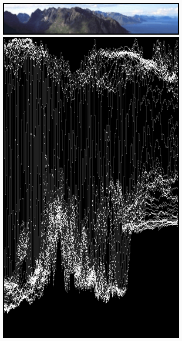

Display Mode¶
The are different display modes available, each having a specific purpose.
Image Preview¶
The Image Preview mode shows you what the resulting video will look like when saved. This is the main working mode for adding strips and moving them around, cutting, grouping (making meta) and splicing them through special effects.
Luma Waveform¶
For the selected channel, brightness, or luminosity, is mapped with this display.
A luma waveform allows you to judge the quality of the luminance distribution across the video signal, you can view a luma waveform instead of the usual output display on every control monitor.
The display plots for every scanline the luminance value. The lines are all drawn on top of each other. The points get brighter if the lines cross (which is very likely with several hundred scanlines). You will understand the picture most easily if you plug an oscilloscope to the Luma-video-output of your television set. It will basically look the same.
In this mode, the vertical axis represents the luminosity: 0 at the bottom, 1 at the top; the horizontal axis is a mapping from the horizontal axis of the frame. There are as many curves as scanlines in the frame: each one of this curves represents the luminosity of the pixels of one line. Moreover, the color of a pixel in this mode represents the number of pixels from the matching column of the frame sharing the same luminosity, i.e. the number of curves that cross at this point (black/transparent, for no pixel, white/opaque for at least three pixels).
- Separate Colors
- Separates RGB channels into separate graphs.
This mode is good for:
- If the waveform does not fill the whole picture you might want to play with the Bright/Contrast modifier until it fills the whole picture (contrast autostretch).
- With the more advanced Curves or Color Balance modifiers, you can be more precise.
- You can judge if you want to dump the whole thing since it is completely distorted and clips at the top or the bottom.

The various horizontal lines in the Luma waveform match the uniform-colored lines of the picture. Note that the ‘gray 20%’ one-pixel width line (inside the yellow strip) is represented in the Luma waveform by a gray line. The two lines drawing an “X” are from the two linear tone shades (white –> black and black –> white). Finally, the broken line matches the complex tone shade at the bottom of the picture. |

The curves are quite visible. We found a luma of 80-100% for the sky, a luma around 40% for the sea, and a luma of 10-20% for the mountains, growing around 40% for the sunny part. |
Note
The pictures (first green frame, at the top) are only 50px high, to limit the number of curves displayed in the Luma waveform.
Use this display to check for appropriate contrast and luminosity across all frames in the channel. When spots in the film that should have even illumination do not, it looks like a flashbulb went off or an extra light was suddenly turned on. This can happen if two strips were rendered or shot under different lighting conditions but are supposed to be contiguous.
Chroma Vectorscope¶
Use this mode judge the quality of the color-distribution and saturation, you can also view a U/V scatter-plot.
The picture is converted to YUV-format. The U and V values represent the angle of the color. For pixel of the picture, one point is plotted in the display at the U and V value position. If several pixels happen to have the same UV value the pixel in the plot gets brighter.
To help you understand what color is meant, a hexagram marking the extreme positions (red, magenta, blue, cyan, green, yellow) is shown and a red cross to mark the origin.
In other words, for the selected channel, this display shows the color space of the image inside a hexagon. Each point of the hexagon is a primary color: red, magenta, blue, cyan, green, and yellow. Black is at the center, and overall saturation is scaled as dots closer to the outside. The example to the right shows that the image has a lot of red (50% saturation) and small amount of blue, with no green.
Always: remember to activate an additional control monitor of the end result. Color calibration is a matter of taste and depends on what you want.
Use this display to check for too much color saturation. While over-saturated images look great for op-art and computer displays, they might not when shown on the big screen TV.
This mode is good for:
- If you picture looks very moody or desaturated you might want to take a look at the U/V plot. You will most likely see all pixels building a crowd at the origin. If you add saturation using the Saturation slider in the Filter panel or any modifiers that change color, you can see in the U/V plot if you distort the color.
- If you do color-matching on a by hand basis you can match the angle you see of different channels monitors.

Example image.

Example of a Chroma Vectorscope Preview.
Histogram¶
This mode displays a graph showing the distribution of color information in the pixels of the currently displayed image. The X axis represents values of pixel, from 0 to 1 (or 0 to 255), while the Y axis represents the number of pixels in that tonal range. A predominantly dark image would have most of its information toward the left side of the graph.
Use this mode to balance out the tonal range in an image. A well balanced image should have nice and smooth distribution of color values.
Example image.

Example of Histogram Preview.